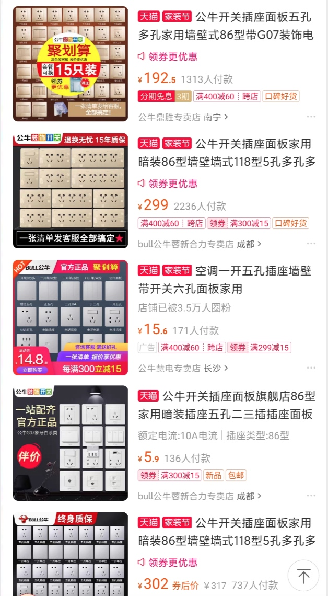

设计并不是搞艺术，设计师既需要一定的灵感和天分，也需要后天努力的学习，掌握一定的技巧和方法，更重要的是严谨细致的心思。

阅读原文的第一章节，作者举例的插座的设计案例。根据生活中的习惯，虽然乍一看是右侧的插座设计的让用户感觉更加合理，但是目前生活中的插座还是以左图为主，在某宝搜索插座，跳出的产品多数以左侧的形式为主

是什么造成这种情况的，为什么感观上右侧给人更加好的用户体验，但是现实中还是以左侧的插座为主，带着这个疑惑，我开始寻找原因。
居中型86插座相比较左右分离的插座形式，从观赏上来说更加的美观，家庭装修采用居中形式看上去更加简洁
在保险丝时代，为了保证电路不过载，居中型86插座只能插入一个电器更加的安全
成本问题：孔距加大后的插座的绝缘成本上涨，导致插座成本上涨，部分中小型企业可能没发生产
引用文章中的“用户体验设计首先是要解决用户的某个实际问题，其次是让问题变得更容易解决，最后是给用户户留下深刻的印象，让他在整个过程中产生美好的体验。视觉体验只是整体体验的一部分，因此外观的美丑、是否有创意，仅是设计中的一部分内容，它并不是设计的全部”。总结，用户体验设计并不是设计的全部，他仅仅是设计中的一部分内容，它并不是设计全部